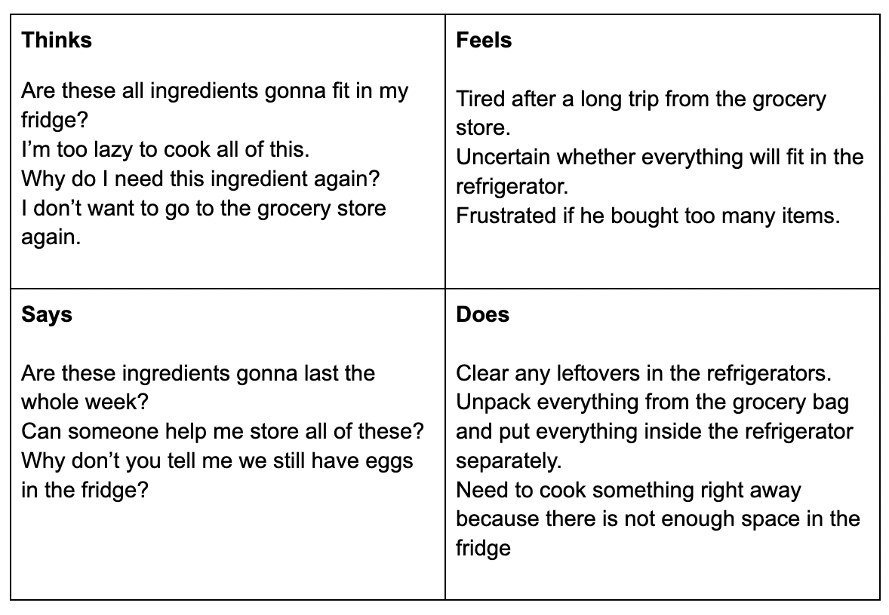
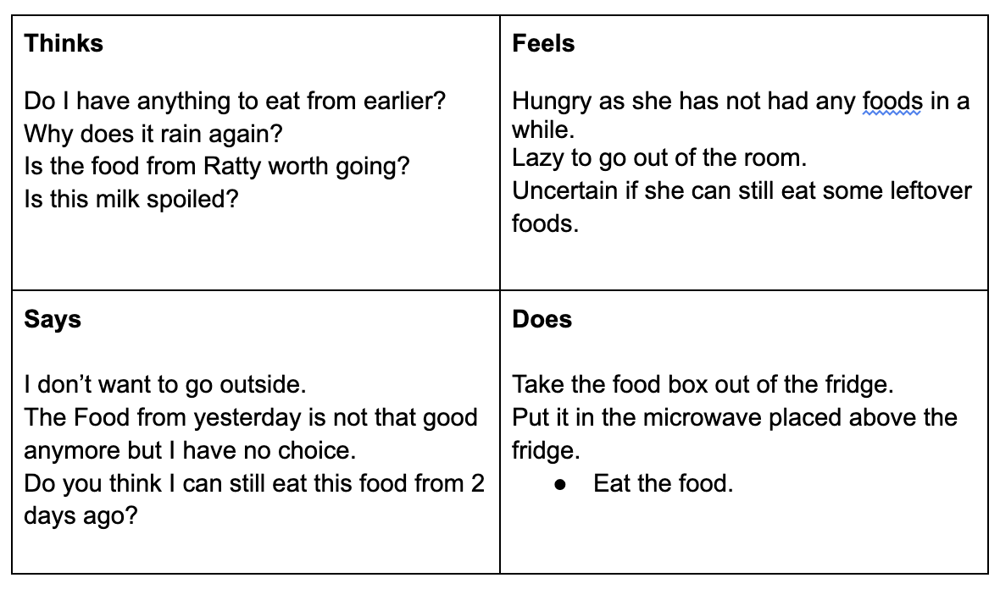

- User 1 tried to put a pack of soda cans into the fridge but the package was too big. Therefore, User 1 needed to take the soda cans out of the package and put them in the fridge separately.
- User 2 took a cup of ice cream out of the freezer and ate it. The texture of the ice cream is too hard for him to eat right away. He needs to leave it out for about 5 minutes before eating.
- User 3 took his stored foods from the fridge and put it in the microwave that is placed on the fridge before eating.
1. How often do you use the refrigerators in your dorm given by Brown?
2. How many refrigerators you have in your dorm
3. What do you normally store in your refrigerator?
4. Can you rate the refrigerators from 1-5?
5. Is there an aspect, if any, you have a problem(s) with your current refrigerator?
- All 3 users use refrigerators with a different frequency, While one user uses it around 5-6 times per day, another uses it around once per day.
- All users have around 2-3 refrigerators in their dorms.
- The user who uses the refrigerator most often stores drinks, food ingredients, and their cooked meal in it, while the user who uses a refrigerator less often mainly stores meals they bring back from a dining hall.
- All users rates it 2-3
- All three users have their different problems with the refrigerators, One user is not satisfied as the coldness in the machine is not well-distributed inside. Another user has a problem as the refrigerator he was given does not have a freezer. While the user who uses less often does not have a problem with the refrigerator.
Tiger Woods is a junior brown student who is off the meal plan. He usually goes to a grocery store during the weekend to store food ingredients to cook for the whole week. He just got back from the grocery store trip and is about to store everything he bought inside the refrigerator. This persona represents a user group who uses a refrigerator not only for storing meals but also food ingredients.
Maggie May is a sophomore brown student who is on the meal plan. She normally eats from the dining halls and restaurants around the campus. Sometimes when it’s raining or she feels lazy to go outside, she eats a meal she got from the dining hall/restaurants earlier. This persona represents a user group who uses a refrigerator mainly for storing meals or snacks.
